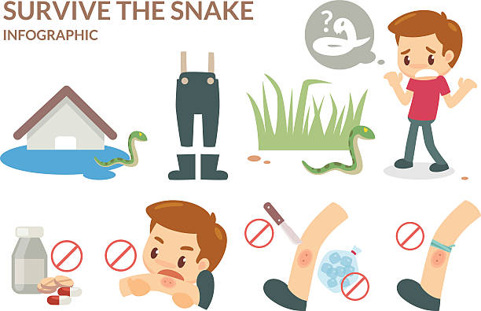

SYMPTOMS
1.Puncture marks at the wound.
2.Redness, swelling, bruising, bleeding, or blistering around the bite.
3.Severe pain and tenderness at the site of the bite.
4.Nausea, vomiting, or diarrhea.
5.Labored breathing (in extreme cases, breathing may stop altogether)
6.Rapid heart rate, weak pulse, low blood pressure.
7.Disturbed vision.
FIRST AID
1.Lay or sit down with the bite in a neutral position of comfort.
2.Remove rings and watches before swelling starts.
3.Wash the bite with soap and water.
4.Cover the bite with a clean, dry dressing.
5.Mark the leading edge of tenderness/swelling on the skin and write the time alongside it.